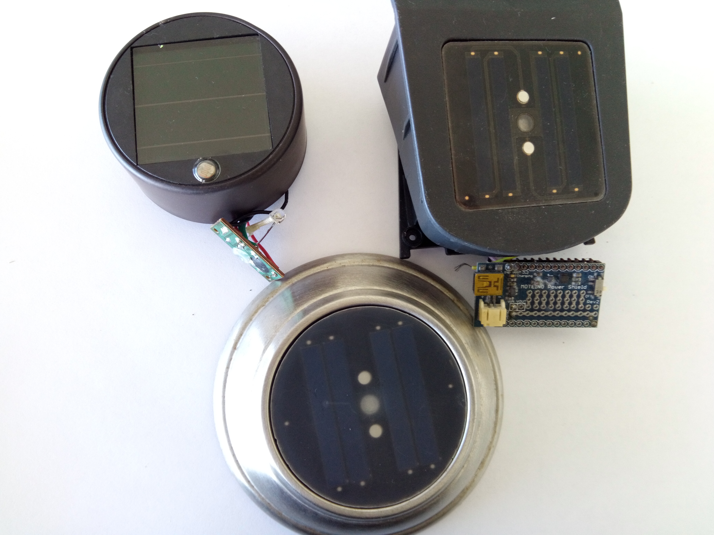
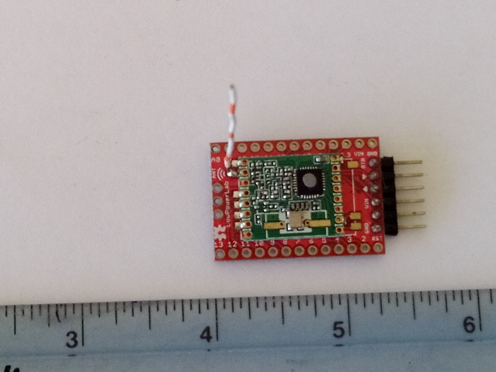
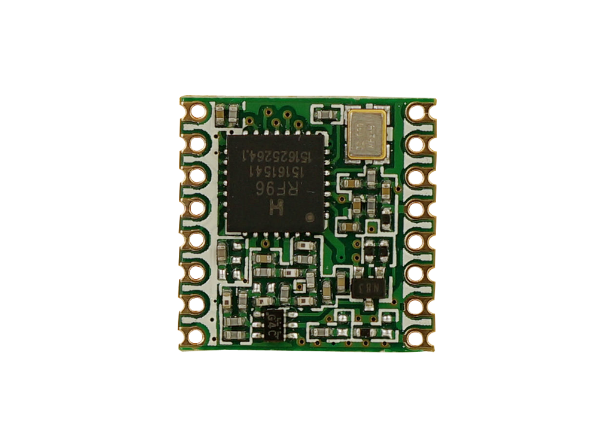
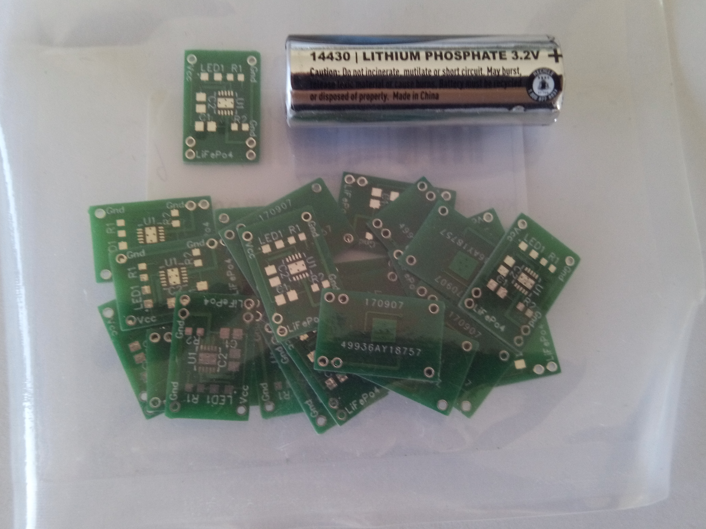
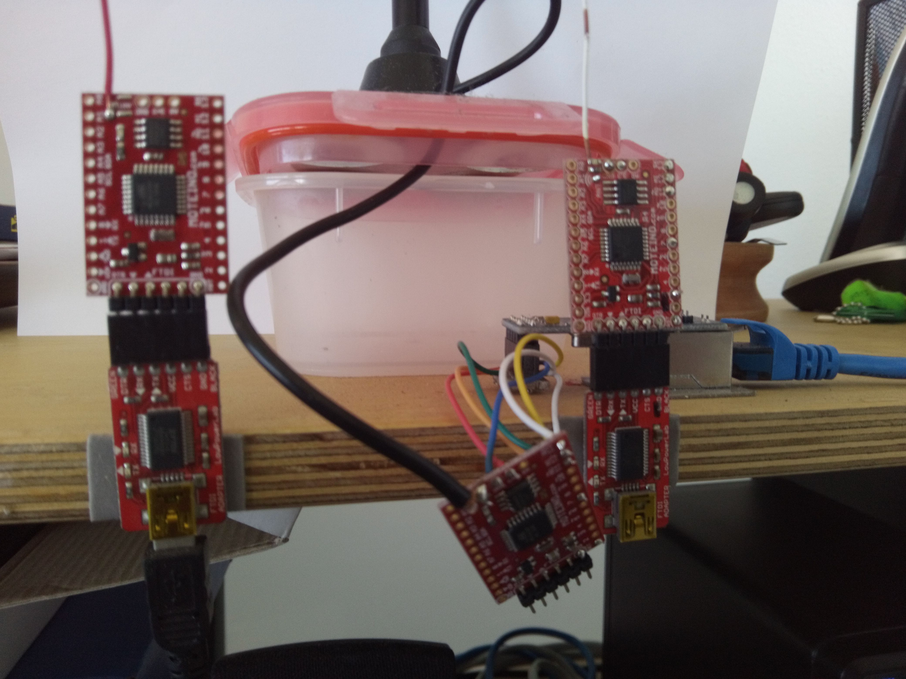
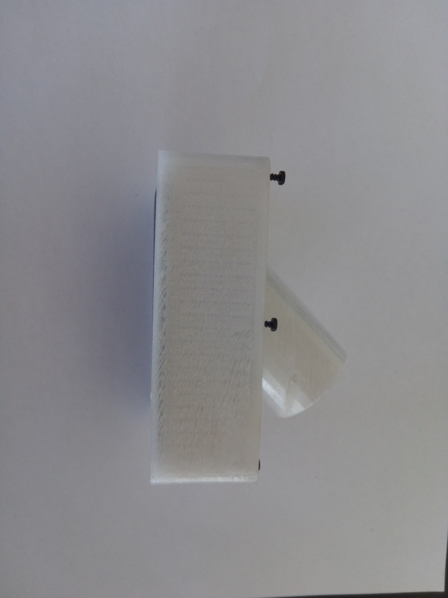

The Instrumented Farm
Werner Thie - werner@thieprojects.ch
Meet me every Friday 1700-1830 @ the Coder Dojo, building PB-19, Holualoa Elementary
a tiny bit of history...
we always wanted a farm
a sustainable FOSS farm
(F)ree and (O)pen (S)ource (S)oftware
a farm is a place where humans try to instill some order

to separate unwanted from wanted

again, what is a farm?
Mass Transfer Analysis
Sustainability
is achieved when mass flow is balanced
Points of interest - Measure what can be measured
A lot of data can be more effectively gathered manually
County and catchment water
Human usage
Irrigation
Coffee processing water

Weather
Rainfall
Wind speed
Temperature
Humidity
Radiation
Bio Digester
Feed, water, organics
Slurry, temperature, pH
Methane, volume, composition
Effluent, temperature, pH, turbidity
Compost
Feed, water, organics
Temperature
Produce
pH
Electrical Energy
HELLCO
PV
Methane, (generator)
Methane, (roasting, cooking)

Chemicals
Fertilizer
Herbicides/Pesticides
Human Medication
Human produced effluents/septic tank
Plastic softeners outwash
Nano particles
Soil analysis
Composition
Humidity
pH
Imagery
Manual picture taking
Autonomous picture taking
Plant health, evolution
Erosion
Tagging
Plant, location
local data base
Sensors
| Property | Price | Calibration | Precision | Longevity | Energy | Speed |
|---|---|---|---|---|---|---|
| Temperature | --- | no/once | ++ | +++ | --- | secs |
| Humidity | --- | no | + | +++ | --- | secs |
| Vol liquid | --- | yes | - | ++ | --- | NA |
| Vol gas | +++ | yes | - | ++ | --- | NA |
| Gas/Wind Speed | ++ | yes | - | + | --- | NA |
| pH liquid | ++ | yes | - | 1 year | - | mins |
| pH solid | ++ | yes | -- | 5 years | - | mins |
| Flammability | - | yes | +- | 5 years | +++ | secs |
| Radiation | - | no | + | +++ | - | secs |
| Voltage/Current | - | no | +++ | +++ | -- | secs |
| Magnetic field | - | yes | + | +++ | -- | < secs |
| Location/Position | ++ | yes | + | +++ | + | secs |
Vision & goals
imagine...
the brutal reality
is mowing, mowing mowing
Robotic mopping

The long and winding road
Tinkerforge, powerful, pricey and power hungry

The garden lamp approach
Moteino - Arduino type Uno - a tiny and only 3.3V FOSS implementation
Decent documentation

Great radio from Hope RF
Implemented so far
Solar power source
Base station
3D printing - design with SCAD and Cura

3D printed enclosures
3D printed enclosures

pH Meter commercial broken

pH Meter replacement

Swimming thermometer - worked for more than a year
A lot of mowing in between :)
mowing
mowing
mowing
mowing
mowing :)
Mahalo nui loa!